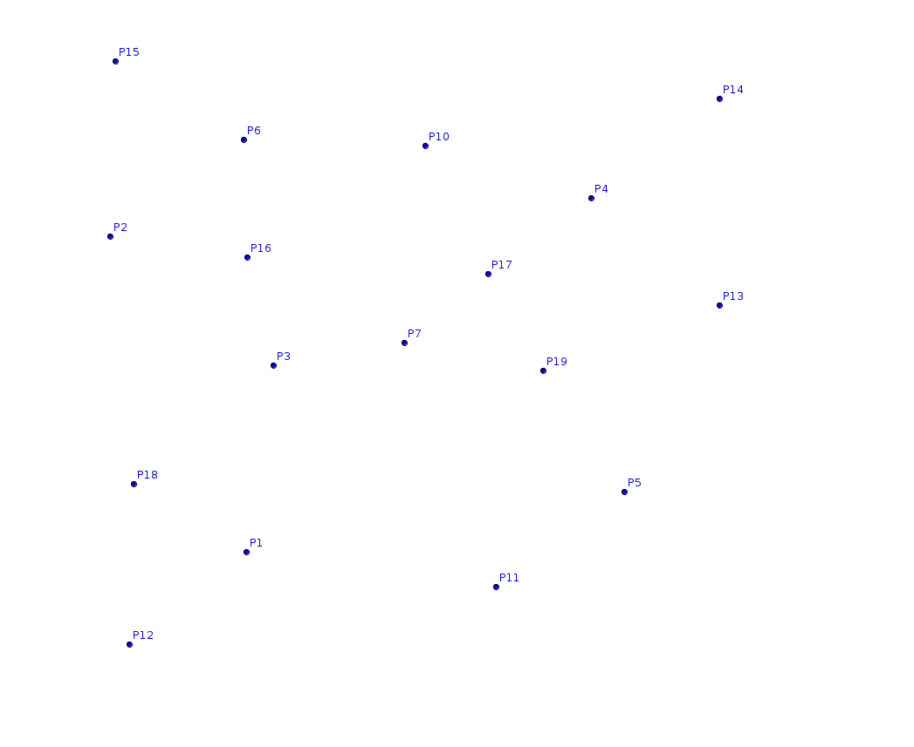
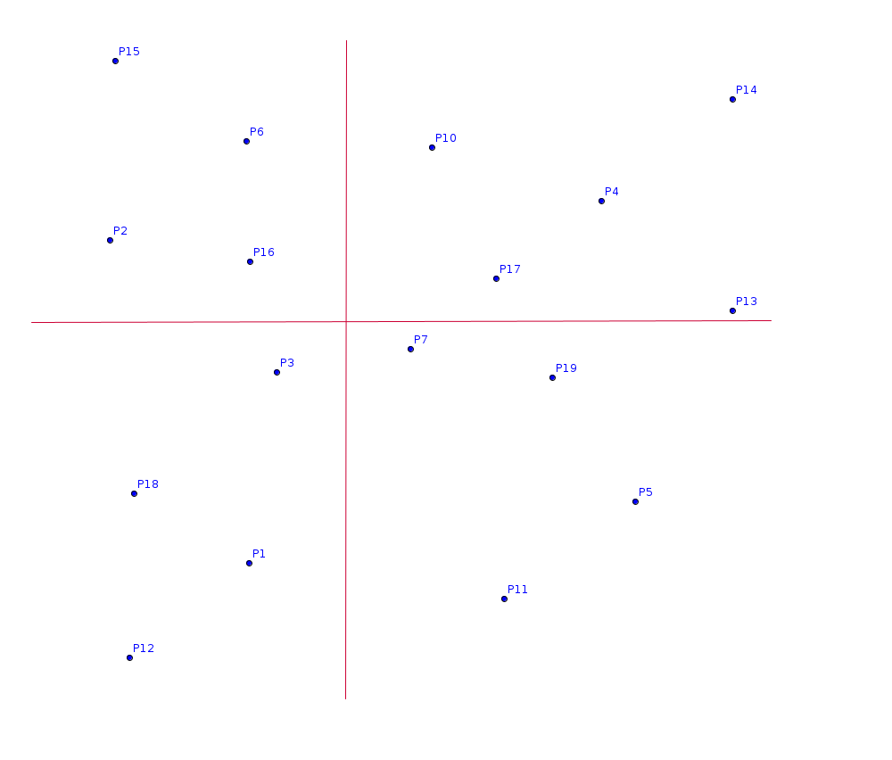
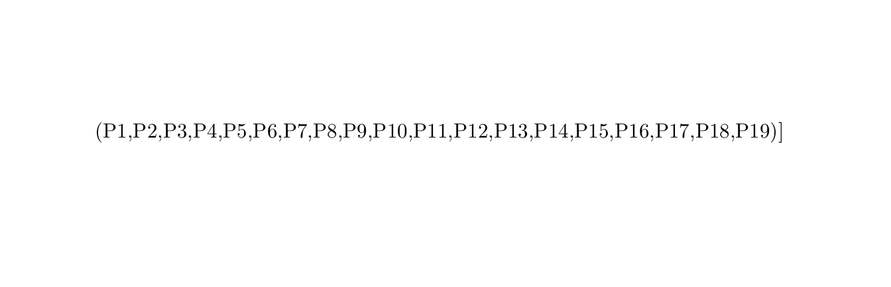
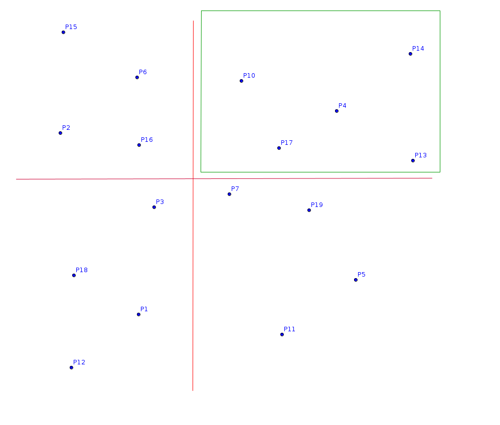
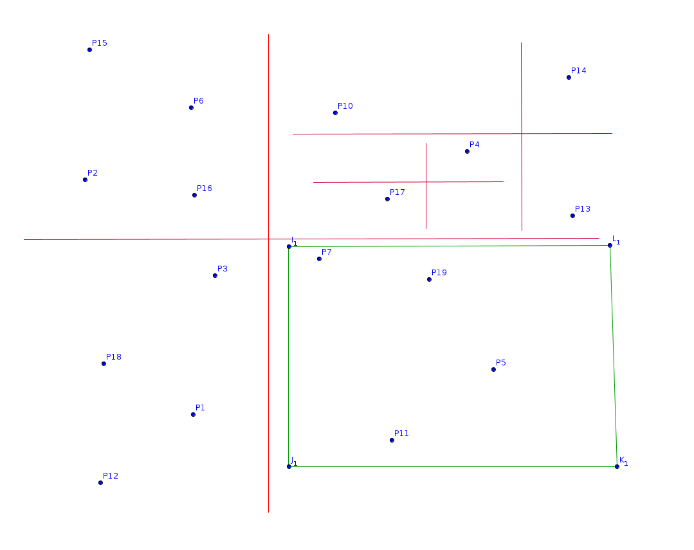
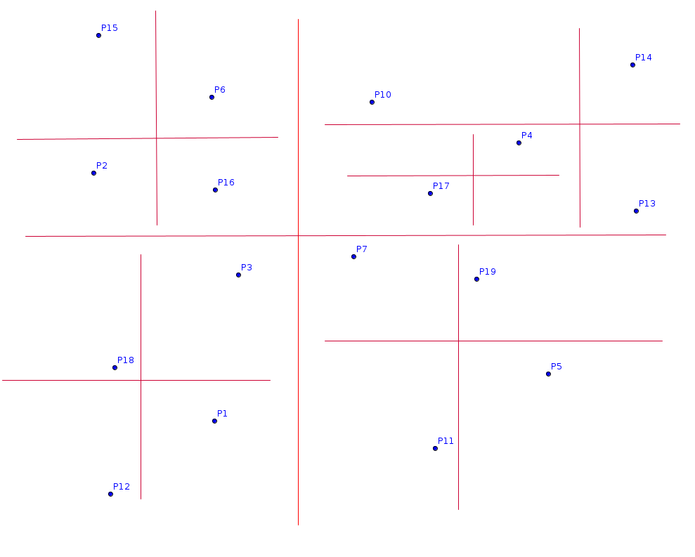

1 / 9

We have a set of points S.
2 / 9


We split it into 4 spaces with 2 lines. We can see the resulting tree on the right.
3 / 9

We perform the same move recursively while some nodes are not leafs (ie contain more than one point).
7 / 9

There are no more nodes to recurse in. So we return to the root and continue recursing on the others branches if necessary.
9 / 9

Finally we obtain this partition tree.